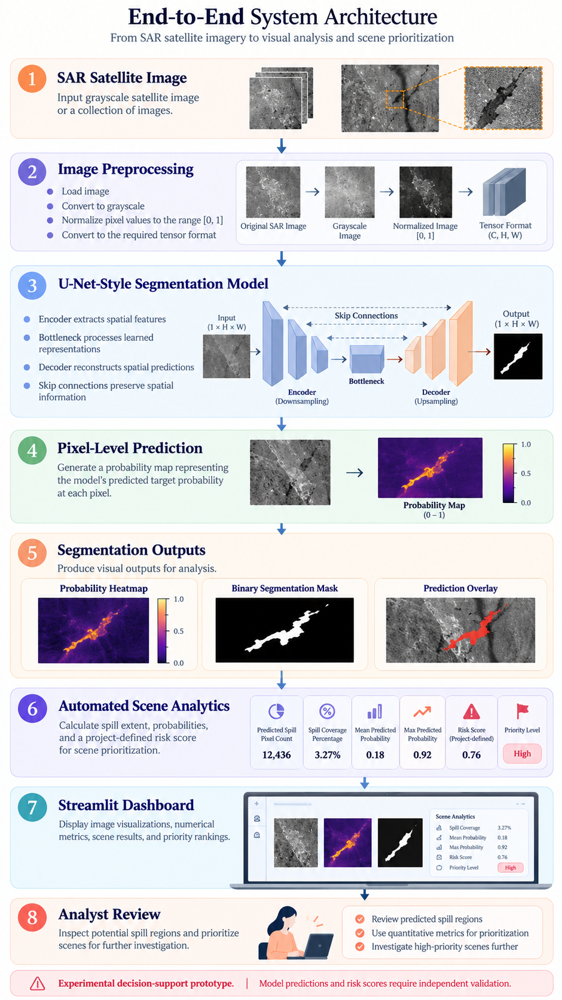
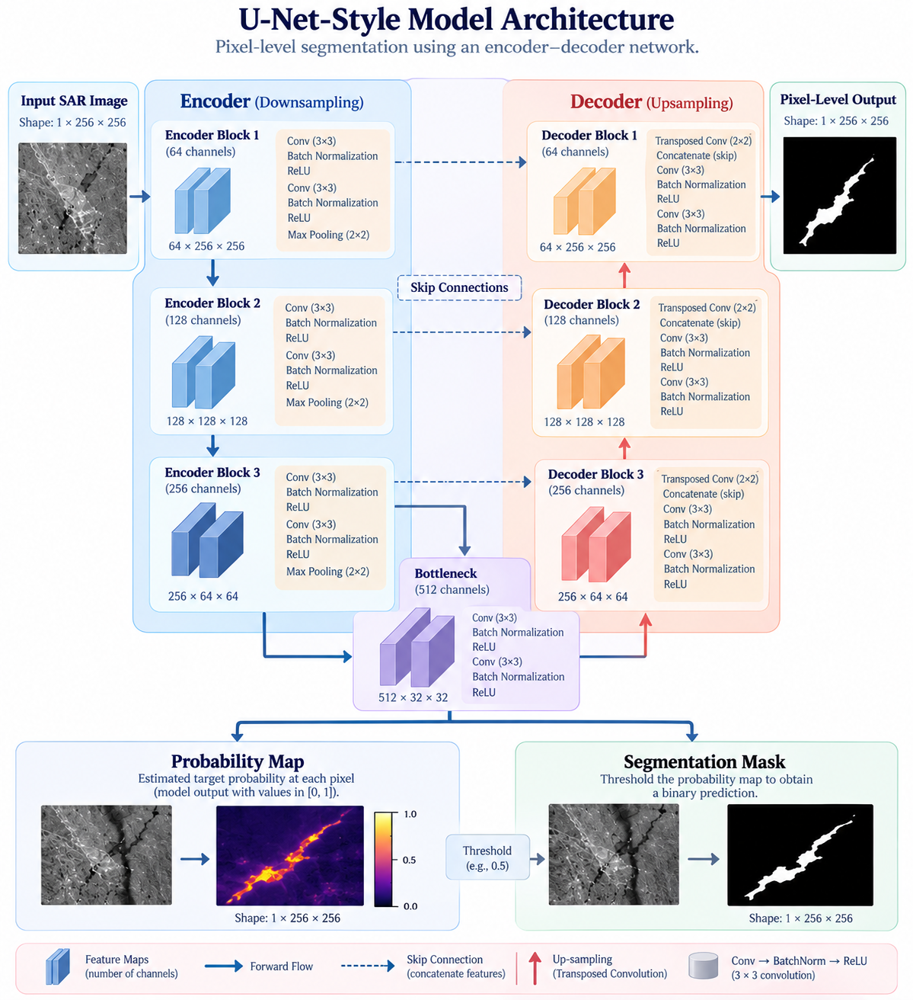
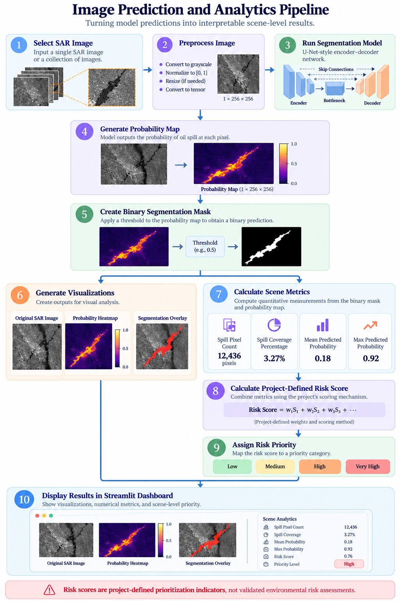
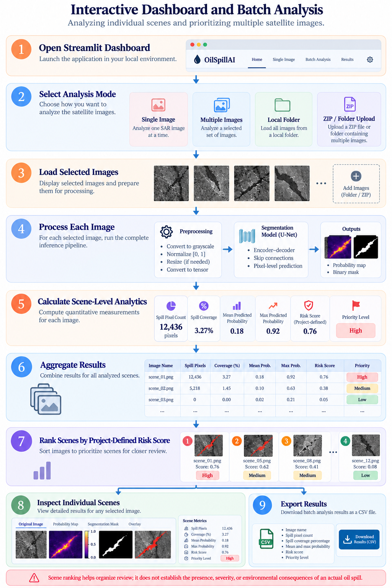

Oil Spill AI · Project walkthrough
Project flow diagrams
Use the buttons to jump to a workflow, or scroll through the diagrams in sequence. These diagrams were supplied for the Oil Spill Detection & Analysis project.
← Back to Oil Spill project detailsEnd-to-end workflow
From SAR scene to analyst review

Pixel-level semantic segmentation
U-Net-style model architecture

Single-scene inference
Image prediction and analytics pipeline

Multi-scene review
Interactive dashboard and batch analysis

Interpretation note: Segmentation predictions and the project's risk-prioritization score are experimental. The score organizes scenes for review and is not a validated environmental-risk assessment.